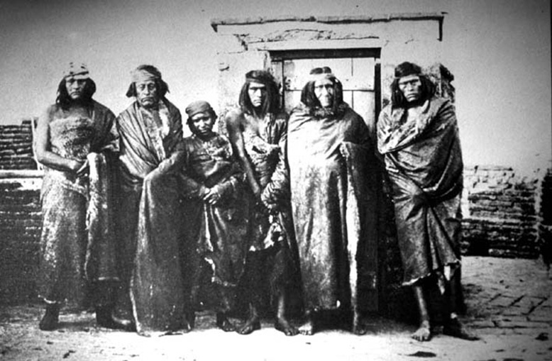
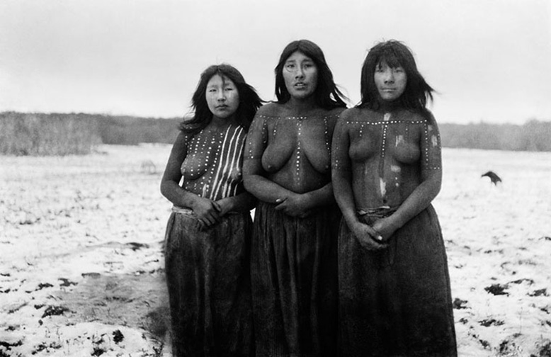
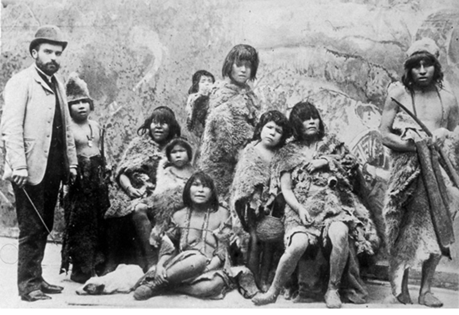

Etnias extintas
Los aonikenk o tehuelche, pueblo cazador nómada terrestre que vivió entre el río Santa Cruz y el estrecho de Magallanes. Los europeos los bautizaron como “patagones”. Son reconocidos como uno de los pueblos más altos del mundo, algunos llegaban a medir dos metros. Desaparecieron por un proceso de aculturación propiciado primero por los mapuche (araucanización), y posteriormente por los argentinos en la Patagonia oriental y por las enfermedades contagiosas que les transmitieron los colonizadores.
Los selknam u onas, nómadas terrestres cazadores establecidos en la isla Grande de Tierra del Fuego. Emparentados con los aonikenk por su aspecto físico y el lenguaje. Su extinción comenzó en 1881 con la llegada del hombre blanco tras el oro descubierto en la isla y posteriormente por la acción de los estancieros que se establecieron para criar ovejas.
Etnias en via de extincion
1.- Los yaganes, fueron nómades canoeros que habitaban, la isla Navarino, la región del canal Beagle y adyacentes, llegando incluso al cabo de Hornos; es el grupo étnico más austral del continente. Sus últimos representantes, dos mujeres, viven en Villa Ukika cercana a Puerto Williams.
2.- Los alacalufes o kawésqar, fueron nómades canoeros que se desarrollaron en los canales y fiordos desde el golfo de Penas al estrecho de Magallanes e islas al oeste de Tierra del Fuego. Sus últimos integrantes viven casi todos en Puerto Edén.
Los Menéndez y los Braun, terror de la Patagonia
José Menéndez, inmigrante asturiano, junto a otros pioneros, se apoderó de manera fraudulenta de miles de hectáreas en la Patagonia chilena y argentina. Además de participar en el exterminio de los pueblos originarios de Tierra del Fuego. “El genocidio ocurrido en la Patagonia es parte de la historia de Chile y debe ser develado totalmente ante los ojos de los chilenos, incluso ser parte de las materias escolares”.
